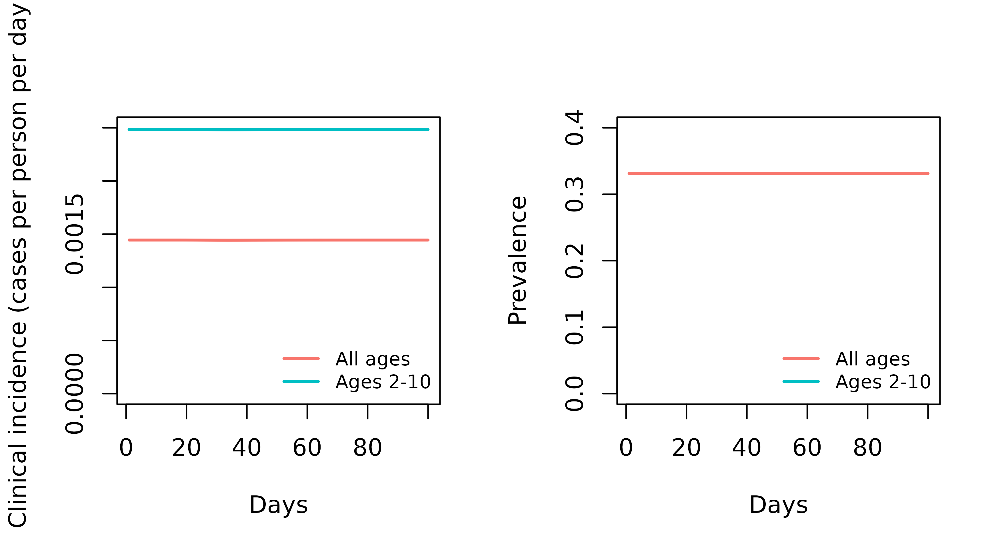
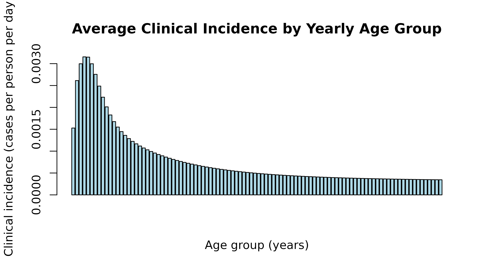
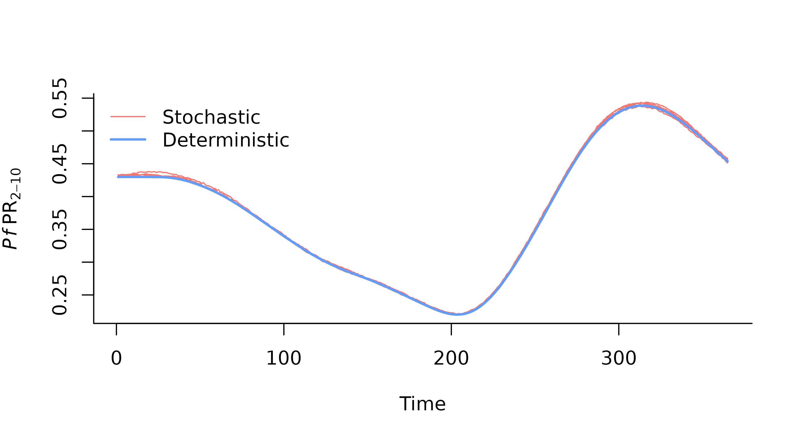

1. Simplest run
We can get started with the simplest model run with almost entirely default model parameters. The only parameter that malariasimple requires you to define in the initial EIR (init_EIR)
library(malariasimple)
##------------------- Define default parameters ----------------------
params <- get_parameters() |>
set_equilibrium(init_EIR = 10)
##----------------------- Run model ----------------------------------
out <- run_simulation(params) |> as.data.frame()
##-------------------- Plot PfPR[2-10] ------------------------------
plot(x = out$time, y = out$n_detect_730_3650/out$n_730_3650,
type = "l", lwd = 2,
xlab = "Days", ylab = expression(paste(italic(Pf),"PR"[2-10])),
ylim = c(0,1))2. Setting up basic parameters
Simulating a a model in malariasimple is a two-step process:
first define parameters, then run the model. You can define all core
parameters using the helper function get_parameters(). For
a detailed description of the parameters and their default values, refer
to the documentation by running ?get_parameters.
The other key function in preparing parameters is
set_equilbrium(). This calculates equilibrium parameters at
the specified initial EIR. This function also provides some ‘finishing
touches’ to the parameter list in order to satisfy the model. It is
therefore essential that set_equilbrium() is called at the
end of the parameter preparing process.
custom_params <- get_parameters(n_days = 200, #Length of simulation
human_population = 1000, #Size of human population
eta = 1/(30*365)) |> #Human population birth/death rate
set_equilibrium(init_EIR = 10)
custom_out <- run_simulation(custom_params)3. Defining treatment coverage
Malaria treatment therapies are built into the core structure of the
model through the inclusion of the Treated (T)
and Prophylactically Protected (P) states (see
model_introduction vignette). A given proportion of cases
are successfully treated and enter the Treated state where they
are protected from superinfection and infectiousness to mosquitoes is
approximately two-thirds lower than that of untreated individuals. They
then progress to the ‘Prophylactically Protected’ state where they are
fully protected from infection and do not contribute to the overall
force of infection.
Treatment programmes can be customised by setting the following
parameters in the get_parameters() function:
daily_ft: the proportion of cases that are promptly and effectively treated. This can be given either as a scalar value (if treatment coverage is assumed constant throughout the simulation), or as a vector of daily values. (Default = 0)rT: individuals leave the Treated state at raterT, i.e. time spent in this state is assumed to follow an exponential distribution with mean 1 / rT. (Default = 1/5 days-1)rP: individuals leave the Prophylactically Protected state at raterP, i.e. the time spent in this state is assumed to follow an exponential distribution with mean 1 /rP. (Default = 1/15 days-1)
treatment_params <- get_parameters(n_days = 200,
daily_ft = 0.7, #Assume 70% of cases are effectively and promptly treated throughout the simulation
rT = 1/3, #Treated individuals remain infectious for an average of 3 days
rP = 1/20, #Treated individuals retain prophylactic protection for an additional 20 days
) |>
set_equilibrium(init_EIR = 10)
treatment_out <- run_simulation(treatment_params)4. Age Group Rendering
From get_parameters(), we can define which age groups we
want the model to output regarding clinical incidence and prevalence. It
is essential that these align with the age compartments defined in
age_vector (for default values, see ?get_parameters). All ages must be
provided in days. To align with malariasimulation,
prevalence is inferred from the proportion of detected infections
(n_detect_) and the population proportion within that age group (n_)
In the following examples we will request prevalence and clinical incidence for two age groups:
- Ages 2-10
- Everyone
##--------------------- Define age categories ------------------------
age_vector <- c(0,1,2,5,10,20,40,60,100)*365
min_age_render <- c(2,0)*365
max_age_render <- c(10,Inf)*365
## --------------------- Set up model parameters --------------------
params_ages <- get_parameters(n_days = 100,
age_vector = age_vector,
clin_inc_rendering_min_ages = min_age_render,
clin_inc_rendering_max_ages = max_age_render,
prevalence_rendering_min_ages = min_age_render,
prevalence_rendering_max_ages = max_age_render) |>
set_equilibrium(init_EIR = 10)
## -------------------------- Run model --------------------------
out_ages <- run_simulation(params_ages) |> as.data.frame()
## Plot
par(mfrow = c(1,2))
plot(x = out_ages$time, y = out_ages$n_clin_inc_0_Inf / out_ages$n_0_Inf,
type = "l", col = "#F8766D", ylim = c(0,0.0025),lwd = 2,
xlab = "Days", ylab = "Clinical incidence (cases per person per day)")
lines(out_ages$time, out_ages$n_clin_inc_730_3650 / out_ages$n_730_3650,
col = "#00BFC4",lwd=2)
legend("bottomright", legend = c("All ages", "Ages 2-10"),
col = c("#F8766D", "#00BFC4"), lty = 1,
bty = "n", ncol = 1, cex = 0.8, lwd=2)
plot(out_ages$time, out_ages$n_detect_0_Inf / out_ages$n_0_Inf,
type = "l", col = "#F8766D", ylim = c(0,0.4), lwd=2,
xlab = "Days", ylab = "Prevalence")
lines(out_ages$time, out_ages$n_detect_730_3650 / out_ages$n_730_3650,
col = "#00BFC4",lwd=2)
legend("bottomright", legend = c("All ages", "Ages 2-10"),
col = c("#F8766D", "#00BFC4"), lty = 1,
bty = "n", ncol = 1, cex = 0.8, lwd=2)
Plotting Age Distribution
We can also use the age rendering function to plot the age
distribution of certain outputs. Here we show an example of how to
output the average age distribution of clinical incidence. As above, we
report incidence per capita (cases per person per day) by dividing each
age group’s incidence count (n_clin_inc_*) by its
population (n_*), so the values are on the same scale as
the plots above.
age_vector <- c(0:100) * 365
min_age_render <- c(0:99) * 365
max_age_render <- c(1:100) * 365
## --------------------- Set up model parameters --------------------
params_ages <- get_parameters(
n_days = 100,
age_vector = age_vector,
clin_inc_rendering_min_ages = min_age_render,
clin_inc_rendering_max_ages = max_age_render,
prevalence_rendering_min_ages = min_age_render,
prevalence_rendering_max_ages = max_age_render
) |>
set_equilibrium(init_EIR = 10)
## -------------------------- Run model --------------------------
out_ages <- run_simulation(params_ages) |>
as.data.frame()
## -------------------------- Plot age distribution --------------------------
clin_cols <- grep("n_clin_inc", colnames(out_ages), value = TRUE)
pop_cols <- sub("n_clin_inc_", "n_", clin_cols)
# Per-capita clinical incidence (cases per person per day), averaged over time
age_means <- vapply(
seq_along(clin_cols),
function(i) mean(out_ages[[clin_cols[i]]] / out_ages[[pop_cols[i]]], na.rm = TRUE),
numeric(1)
)
barplot(
age_means,
col = "lightblue",
main = "Average Clinical Incidence by Yearly Age Group",
xlab = "Age group (years)",
ylab = "Clinical incidence (cases per person per day)"
)
5. Introducing seasonality
Seasonality can be included in the model using the
set_seasonality() function. The main argument is the
coefficients of a Fourier function (FF) describing the relative carrying
capacity of the vector population over time.
##------------------ Define seasonal parameters --------------------
#Fourier Coefficients
g0 <- 0.28
g <- c(-0.3, -0.03, 0.17)
h <- c(-0.35, 0.33, -0.08)
#Floor argument defines minimal value of relative carrying capacity
seasonal_params <- get_parameters(n_days = 365) |>
set_seasonality(g0 = g0,
g = g,
h = h,
floor = 0.002) |>
set_equilibrium(init_EIR = 10)
##------------------- Run simulation and plot ---------------------
seasonal_output <- run_simulation(seasonal_params) |> as.data.frame()
par(mfrow = c(1,1))
plot(seasonal_output$time, seasonal_output$mv, lwd = 2,
type = "l", xlab = "Days", "ylab" = "Mosquito Population")6. Stochastic Simulations
Simulations can also be run with stochastic human transitions. To
achieve this, we can simply add stochastic = TRUE to the
get_parameters() function call. We can also run multiple
simulations by setting the n_particles parameter in
run_simulation(). This will produce a 3D array with
dimensions [timesteps, variables, particles]. This can be
converted into a long dataframe using make_2d().
set.seed(1)
##------------------- Prepare parameters ---------------------
n_particles <- 5
n_days <- 365
stoch_params <- get_parameters(n_days = n_days,
stochastic = TRUE,
human_population = 1000) |>
set_seasonality(g0 = g0,
g = g,
h = h,
floor = 0.002) |>
set_equilibrium(init_EIR = 10)
##---------------------- Run simulation ----------------------
stochastic_output <- run_simulation(stoch_params, n_particles = n_particles) |> make_2d()
##------------------------ Plot ------------------------------
# Define plot range
plot_range <- range(c(stochastic_output$time, seasonal_output$time))
y_range <- range(c(stochastic_output$n_detect_730_3650 / stochastic_output$n_730_3650,
seasonal_output$n_detect_730_3650 / seasonal_output$n_730_3650), na.rm = TRUE)
plot(NA, xlim = plot_range, ylim = y_range, xlab = "Time", ylab = expression(italic(Pf)~PR[2-10]), bty = "l")
# Add stochastic output
for (i in unique(stochastic_output$particle)) {
subset_data <- stochastic_output[stochastic_output$particle == i, ]
lines(subset_data$time, subset_data$n_detect_730_3650 / subset_data$n_730_3650, col = "#F8766D", lwd = 1, lty = 1)
}
# Add deterministic output
lines(seasonal_output$time, seasonal_output$n_detect_730_3650 / seasonal_output$n_730_3650, col = "#619CFF", lwd = 2, lty = 1)
legend("topleft",
legend = c("Stochastic", "Deterministic"),
col = c("#F8766D", "#619CFF"),
bty = "n",
lty = c(1, 1),
lwd = c(1, 2))